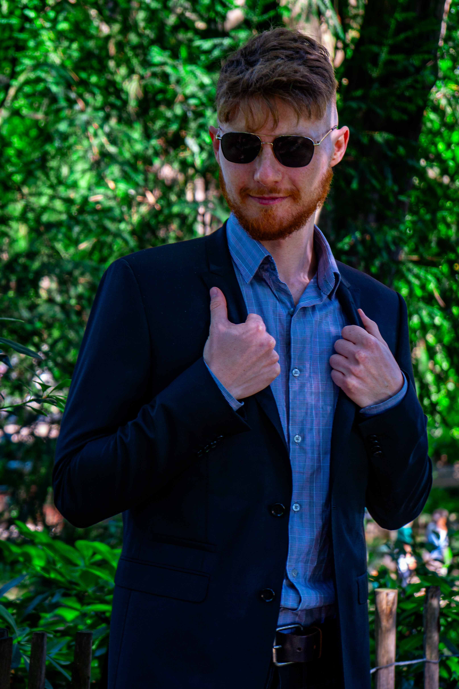
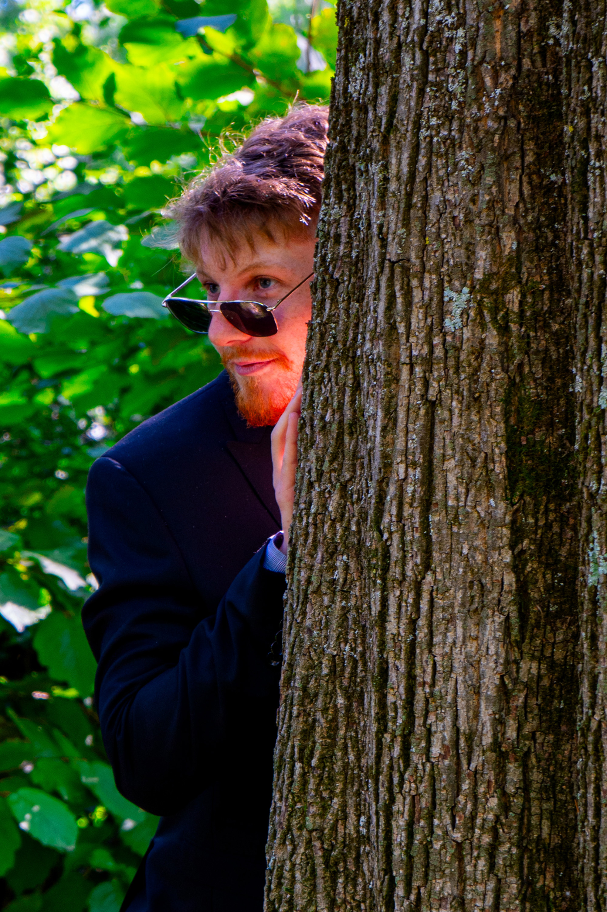
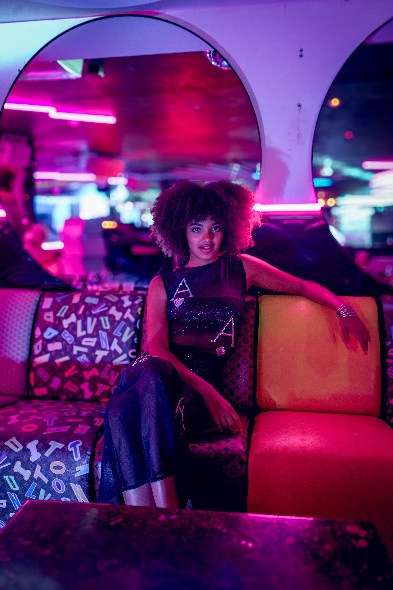
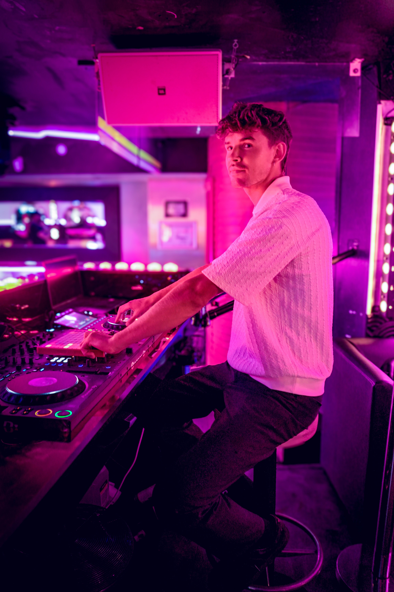
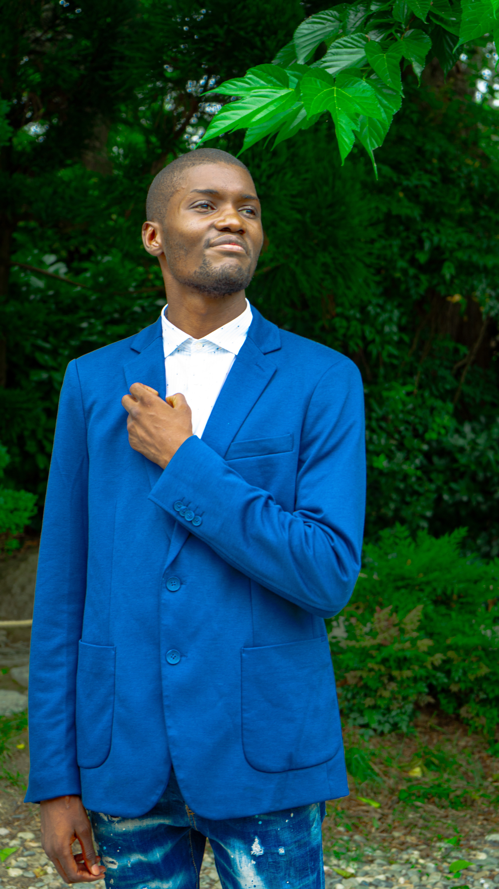

Photo Macro
Série de photographies macro mettant en lumière un univers à la fois fascinant et mystérieux, révélant la complexité et la richesse d’un monde minuscule souvent invisible à l’œil nu.


Joseph Fink
Série portrait réalisée dans un environnement urbain minimaliste. À travers les contrastes de lumière et les silences du regard, j’ai cherché à capter une présence, une tension, une émotion retenue.




Studio Mirac
Série mode conçue pour mettre en lumière les silhouettes et les matières. L’approche visuelle privilégie la pureté des lignes, la texture des tissus et une esthétique contemporaine.




Street Shoot
Captée lors d’un événement urbain, cette série explore le mouvement et la spontanéité. Entre énergie collective et instants suspendus, l’image devient fragment de narration.



Défilé MJM - Métamorphose
Série réalisée lors du défilé “Métamorphose”. Entre lumière scénique et mouvement des corps, les créations prennent vie dans l’instant.